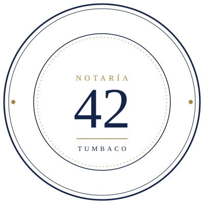

Notaría 42 · Cantón Quito
Dra. María Lorena Bermúdez PozoNotaria Cuadragésima Segunda del Cantón Quito
Fe pública con atención cercana en Tumbaco. Revisa los requisitos de tu trámite y calcula su costo antes de venir.
Lunes a viernes, de 08:00 a 17:00

Catálogo de trámites
Cada trámite, explicado.
Requisitos, pasos y tarifa de cada trámite, para que llegues a la notaría con la documentación completa.
No encontramos ese trámite. Llámanos o escríbenos y te ayudamos.
Calculadora
Calcula tu costo.
Tarifas oficiales 2026 del Consejo de la Judicatura, sobre el Salario Básico Unificado de $482,00, más IVA. Son iguales en todas las notarías del país. Para otros trámites, mira su tarifa en el catálogo o consúltanos.
Antes de venir
Preguntas frecuentes.
Ubicación y contacto
Visítanos en Tumbaco.
Dirección
Av. Oswaldo Guayasamín Oe1-172 y Eugenio Espejo
Tumbaco, Distrito Metropolitano de Quito. Entre El Avicultor y Farmacia Medicity.
Horario
Lunes a viernes, de 08:00 a 17:00